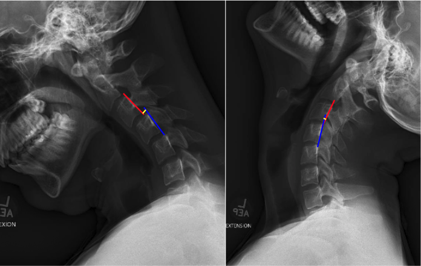

1) Description of Measurement
C2–C7 Translation quantifies the anterior–posterior (A–P) displacement of the cervical vertebrae between flexion and extension positions. It is a dynamic measurement used to evaluate segmental instability across the subaxial cervical spine, particularly after trauma, degenerative changes, or postoperative conditions. The method identifies abnormal intervertebral motion that may indicate ligamentous injury, facet subluxation, or instability of the functional spinal unit. The measurement encompasses translation between vertebral bodies at each motion segment (C2–C7) during physiological flexion and extension.
2) Instructions to Measure
3) Normal vs. Pathologic Ranges
Key Point:
Translation > 3.5 mm or rotation > 11° between adjacent vertebrae indicates segmental instability—a hallmark of post-traumatic, degenerative, or iatrogenic pathology.
4) Important References
White AA, Panjabi MM. Clinical Biomechanics of the Spine. 2nd ed. Lippincott Williams & Wilkins; 1990.
Harris JH Jr, Edeiken-Monroe B. The Radiology of Emergency Medicine. 3rd ed. Williams & Wilkins; 1993.
Kwon BK, Vaccaro AR, Grauer JN, et al. Subaxial cervical spine trauma. J Am Acad Orthop Surg. 2006 Feb;14(2):78-89. doi: 10.5435/00124635-200602000-00003.
Swartz EE, Floyd RT, Cendoma M. Cervical spine functional anatomy and the biomechanics of injury due to compressive loading. J Athl Train. 2005 Jul-Sep;40(3):155-61.
Daffner RH, Deeb ZL, Rothfus WE. The posterior vertebral body line: importance in the detection of burst fractures. AJR Am J Roentgenol. 1987 Jan;148(1):93-6. doi: 10.2214/ajr.148.1.93.
5) Other info....
C2–C7 translation provides a dynamic functional assessment of cervical stability, supplementing static measurements like George’s Line and Spinolaminar Line.
Instability often arises from facet dislocation, degenerative spondylolisthesis, or ligamentous insufficiency (especially posterior longitudinal or interspinous ligaments).
A difference >3.5 mm in translation is one of White and Panjabi’s instability criteria and suggests loss of structural integrity.
Flexion–extension imaging should be performed only after acute fracture or dislocation has been excluded on CT.
Dynamic instability may present only in flexion-extension views, even when neutral alignment appears normal.
When measured across multiple levels, report the level of maximum translation (e.g., “C4–C5: 4.2 mm, unstable”).
Digital PACS tools improve precision; ensure magnification calibration using a radiographic scale marker.
In postoperative or fusion cases, residual translation helps evaluate fusion integrity or adjacent segment motion.